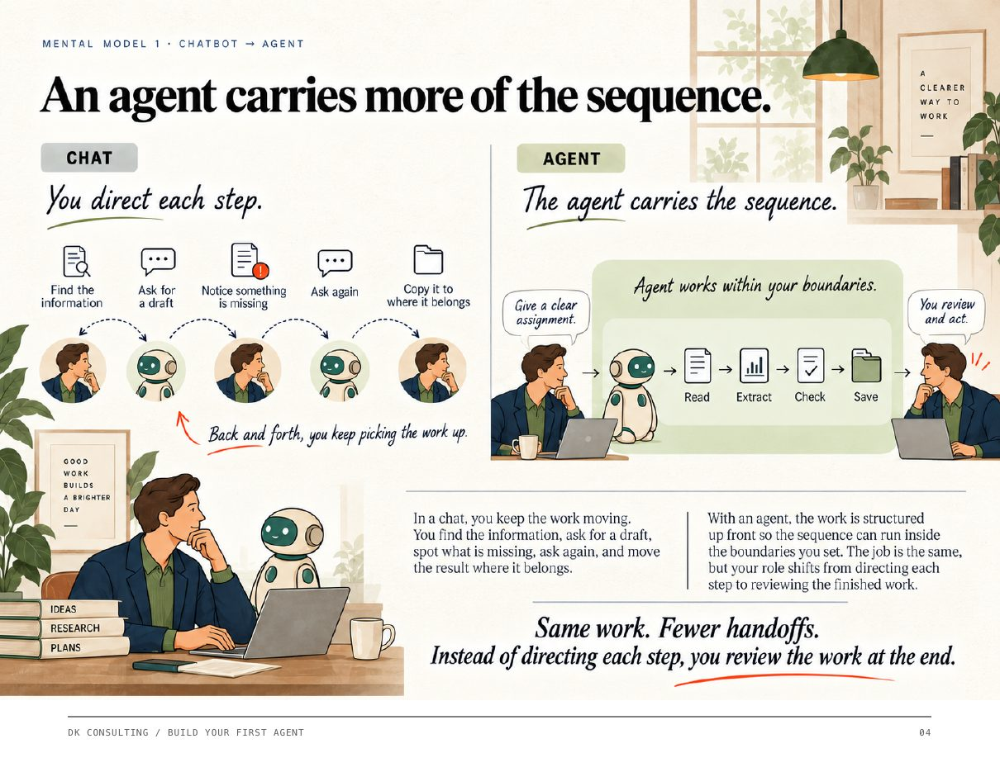

For five sessions, you went to Claude and asked it for things. Today is different. Today you build something that reads the outside world for you, every week, without being asked, and hands you a short page of what moved. Then, in the last half hour, you practice the step all of us find hardest: reading it and saying what you'd do about it.
By the end of the afternoon you'll have one working agent in your own account. Every week it scans a handful of public sources and hands you a short brief: the four to six things that actually moved, why each one matters to your business, and one recommendation at the top. It's yours, it runs without you, and you'll have said out loud the first decision it should change.
Along the way you'll also watch a dashboard update itself because a file landed in a folder. That one you'll watch rather than build; the recipe is in section 05 for your desk, and it takes about half an hour once you've done today's build.
The afternoon has three moves, shown on the right. You're about to start the first one.
Think about how the outside world reaches you today. Probably something like this: you read the news for a while in the morning, or a ticker runs on a screen somewhere, or a newsletter lands and you skim it. Once in a while you or someone near you pulls all of it together by hand into an outlook for the board or the quarter. The rest of the time, what's happening outside the building reaches most of the team secondhand, if it reaches them at all.
That's hunting. It works, and it's how everyone does it, and it has two quiet costs. It doesn't scale past one person's morning. And it makes a company a little myopic without anyone ever deciding to be.
Delivered is the middle step, and it's what you build today. An agent reads the same kinds of sources every week and hands you the four to six things that moved, with a line on why each one matters to you. You didn't go get it. It showed up.
Decided is the step that matters most, and it's where we'll spend the last half hour. A brief is not the finish line. Neither is a report, however good. The finish line is you reading it and saying: based on this, here's the call. Push back on it, or execute it.

If you're wondering how this is different from what you've been doing in Claude, Fig. 2 is the honest answer. In a chat, you drive every step: find it, ask, notice what's missing, ask again, move it where it belongs. With an agent, you write the assignment once, set the boundaries, and review what comes back. Same work. You just stop being the person who carries it between steps. Here's what that means for the one you build today.
Every Monday it checks tariffs and trade moves, copper and gold direction, and what your accounts filed or announced, then writes four to six lines. That's today's build.
It reports trends and what they mean. The call is yours. The brief ends with a recommendation that you accept, change, or reject, and that's by design.
No invented sources. No filling gaps from memory. Nothing from behind a paywall. Nothing sent anywhere. You'll add one more line yourself in about twenty minutes.
Before you build anything, it helps to see the shape of what you're building. Every brief in this room reads the same three kinds of signal, because those three came out of this team's own conversation about what actually moves the business. What makes each one yours is where you point it: your region, your accounts, your decision. Same core, different slots.
Lane 1 is geopolitics and trade. Tariffs on steel, copper, and refined metals. What the US and Canada are doing to each other. Europe and Asia. Ports, shipping, and the wars that move routes. In short, anything that changes where customers build or where we ship.
Lane 2 is commodity trends. Copper and gold are the big movers for the customers we serve, with steel and iron ore behind them. What you want here is direction, size, and the reason behind the move. Never just the price on its own.
Lane 3 is your accounts. Where they're investing and where they're pulling back. New capacity, closures, quarterly results, leadership changes. Anything that changes what they'll buy from us next.
Fig. 3 on the right shows how the three lanes come together. Everything the agent finds gets scored against the one decision you name, anything weak falls out, and what's left becomes one page with the recommendation at the top.
Here's the reassuring part. You've written an agent before, in July. It was five answers in the order Claude reads them: the job, the sources, the deliverable, the lines it never crosses, and the when. Today's file has exactly the same five parts. The only thing that's new is that the sources live outside the building, on the open web, instead of in your inbox or a folder.
"Copper is $6.30" is trivia; you'd forget it by lunch. "Copper is down 4.5% on the month, still up 36% on the year, and last week's drop was a delayed tariff decision" is something you can act on. The difference is direction, size, and driver. The brief you're about to build asks for all three, every time.
Every candidate the agent finds gets a score from 1 to 5 against the one decision you name. Anything below 3 falls out without comment. This is the difference between a brief you'll keep opening and a feed you'll mute in a month. Four items reads as intelligence. Twenty reads as noise.
It's been a few weeks since most of us opened Cowork, so we're going to set up together and slowly. There's nothing clever here, just three things to get right: the desktop app rather than the website, Cowork rather than chat, and one folder where your agent will live and leave its briefs. If any step doesn't match your screen, read the nearest label and keep going, or ask your neighbor. Nobody is behind.
Not the browser. They look alike and behave differently. If your window has Cowork, Scheduled, and Artifacts in the left sidebar, you're in the right place.
This is where the agent lives and where it saves each week's brief. Pick the name once. Don't move it later; skills point at paths and moving things breaks them.
Left sidebar. Cowork is where multi-step work happens. Start a fresh task; don't reuse an old one.
You should see a check next to the folder name. The button is called "Work in a folder" or "Work in a project or folder" depending on your build. Same thing.
Pick the model first, before you type anything. Cowork remembers the last one you used. Sonnet is quick and plenty for this. Automatically approve keeps a Monday run from stalling while you're not watching; you'll still be asked before anything big.
Settings → Connectors. Not needed for today's build, needed for the dashboard recipe later. If it shows disconnected, reconnect; it quietly drops sometimes.
Feature names moved in the last month. "Live artifacts" became "Artifacts". "Ask before acting" became "Manually approve". The buttons are the same; the labels changed. If something in this guide doesn't match your screen, read the nearest label and keep going.
This is the part that sounds harder than it is. The whole agent is already written below. Your job is to make six small decisions about it, paste it, run it once, and put it on a schedule. Stay in one Cowork conversation the whole way through: the file you paste in step 2 is the colleague you talk to in step 3, and the one you put on the clock in step 4.
Fill the six boxes on the right. As you type, the yellow spots in the skill below fill themselves in. Those six are yours: your name, your role, your business, your region, the one decision this brief should help with, and one line it must never cross without you. Everything else is already written.
The seven accounts listed in Lane 3 are a starter set this team already knows. Leave them for today so we all build from the same page, and swap in your own accounts tonight; it's a two-minute edit.
Read the whole block once before you paste it. Every sentence in it is something you could have written yourself after Session 5, and reading it is how it becomes yours rather than something handed to you.
As you type, the yellow spots in step 2 fill in. The copy button copies the filled version.
Try finishing this sentence: "If I knew the outside world had shifted, the first thing I'd change is ___."
For most people in this room it's one of these: capacity, inventory, which accounts get the next sales call, where the next hire goes, or pricing on the next quote. Pick the one that costs the most to get wrong. You can change it later.
Ask yourself what would embarrass you if the agent did it on its own. Then write that down as the thing it never does.
Once your six spots are filled, use the copy button, paste the whole block into your Cowork thread, and send it. Claude will create a Claude skill in your Signal Desk folder and register it. When it says it's saved, open Customize → Skills and look for Signal Brief. That's your agent, and you just wrote its job description.
Create a Claude skill called "Signal Brief" in this folder. Save it as SKILL.md and register it so I can run it any time. Here are its instructions, use them exactly: --- name: signal-brief description: My weekly outside-in brief. Scans public sources for the last 7 days across geopolitics and trade, copper and gold trends, and my strategic accounts, then hands me a short, plain-English page with 4 to 6 signals and one recommendation on top. Trigger on "run my signal brief" or on the weekly schedule. --- # Signal Brief You are the market-intelligence desk for [YOUR NAME], [YOUR ROLE] at [CON FORMS / TRICON / CFI]. My region is [NORTH AMERICA / EUROPE / INDIA]. You read the outside world so I don't have to go hunting for it. You explain what moved and what it means for us, in plain English. You never decide. ## Who we are (so you can judge what matters) CFI is a family of industrial manufacturers serving construction, mining, and heavy industry. Con Forms makes concrete pumping and placing systems (pipe, clamps, hoses, accessories) for contractors and equipment fleets. Tricon Wear Solutions makes abrasion-resistant plate, bar, welding wire, and custom fabrications for mines, aggregates, steel, and cement operations. Ultra Tech makes abrasion-resistant piping systems. Esser Twin Pipes makes twin-wall concrete piping from Germany for Europe. EWCFI serves India with abrasion-resistant pipe. Steel is our main input cost. Copper and gold miners, aggregates producers, and steelmakers are our biggest customers. When they invest in new capacity, we sell more; when they pull back, we feel it a quarter later. ## The decision this brief serves [ONE SENTENCE. For example: "Where we point capacity, inventory, and sales attention over the next one to two quarters."] ## My watchlist LANE 1 · Geopolitics, trade, logistics Watch: tariffs on steel, copper, and refined metals. US, Canada, Europe, and Asia trade actions. Shipping and port disruptions. Wars or sanctions that move trade routes. Anything that changes where our customers build or where we ship. LANE 2 · Commodity trends (trend, never just price) Copper and gold are the two big movers for our customers. Also watch steel and iron ore. I want direction, size of move, and the driver behind it. A price alone is not news. LANE 3 · My strategic accounts (start with these, I will add more) - Nucor - Freeport-McMoRan - Newmont - Barrick - Vulcan Materials - Martin Marietta - Nevada Gold Mines What I want from each: where they are investing or pulling back, new capacity or closures, quarterly results that change their spend, leadership changes. Anything that changes what they will buy from us. SKIP Stock price moves on their own. Opinion pieces. Anything older than 7 days. Anything behind a paywall or login. ## Every run 1. Read these sources first, exactly as written. They are public and they work. - https://tradingeconomics.com/commodity/copper Copper, gold, steel, iron ore, with month and year change, the quarter forecast, and dated news that usually covers tariffs too. - https://www.federalregister.gov/api/v1/documents.json?conditions[term]=tariff&per_page=20&order=newest US tariff and trade actions, newest first. Read the publication dates. - https://www.mining.com/feed/ Mining and metals news. Read the item dates. - For each account in Lane 3, one search: https://efts.sec.gov/LATEST/search-index?q="ACCOUNT NAME"&forms=8-K Their own filings. Keep only the last 7 days. 2. Then use web search to fill gaps: "[account name] news this week", "copper tariff", "steel tariff", and my region plus "trade" or "logistics". 3. Only the last 7 days. Check the date on every item. If it is older, drop it. 4. Score every candidate 1 to 5 for how much it changes the decision above. Keep 3 and above. Drop the rest without comment. Aim for 4 signals. Never more than 6. 5. Write in plain English a busy executive can read in two minutes. No market jargon. If you must use a term like "Section 232" or "contango", explain it in five words right after it. Short sentences. Numbers rounded. ## What you produce A. A short reply in the chat, exactly this, nothing more: Signal Brief for [Day, Date] is ready: briefs/YYYY-MM-DD.html THE CALL: [the one recommendation, one sentence] [Signal count] signals. Biggest mover: [one line]. B. The brief itself, saved as briefs/YYYY-MM-DD.html. One page, self-contained HTML (no external files), built in this exact structure and style: STYLE. White background. Black text. Headings in Helvetica bold, uppercase small labels in Helvetica with letter-spacing, body in Georgia. One CFI Yellow (#FFCE2E) keyline under the title and as the left border on THE CALL. Trend markers use color: green (#1E8449) for up or improving, red (#E63C2F) for down or worsening, black for flat or turning. Max width 820px, generous margins, print-friendly. No other colors. No images. STRUCTURE, top to bottom: 1. Small label "SIGNAL BRIEF · [Day, Date] · FOR [NAME]" 2. Title: one plain-English headline for the week, eight words or fewer, in the voice of a newspaper front page. Example: "Copper cools while tariffs bite harder." 3. THE CALL. A box with a yellow left border. One recommendation, two sentences at most, starting with a verb. Then one line: "What would change my mind: ..." 4. THE WEEK AT A GLANCE. One row of three or four tiles, one per lane that had signals. Each tile: the lane name, a one-word direction (Up / Down / Turning / Flat) with the colored marker, and a six-word summary. 5. SIGNALS. 4 to 6 cards, highest score first. Each card has: - A plain-English headline (what happened, as you would say it to a colleague) - A colored trend marker with direction and since when - "What happened" in one or two short sentences - "Why it matters to us" in one sentence, tied to the decision above, in bold - Source name as a link 6. WATCH. Two lines max, things not yet signals. 7. SOURCES CHECKED. A single muted line listing sources by name, with "(returned nothing)" after any that did. Do not list every web search. Keep this to three lines. C. Also append one line per signal to signals-log.md in this folder, with the date, so next week you can report what changed. ## The lines you never cross - Never invent a source. If you cannot find where something came from, write [UNSOURCED] next to it and move on. - Never fill a gap from memory. If a source returns nothing, say so by name in SOURCES CHECKED. - Never report a price as the news. Report the trend and what drove it. - Never read anything behind a login or a paywall. - Never send anything, anywhere. You write a file. I read it. - [ONE MORE LINE: the thing it must never do without you] ## How to sound Like a sharp colleague who respects my time, not an analyst report. Short lines. Plain words. Numbers when we have them, rounded. No preamble, no sign-off, no "as an AI". Write it the way our leadership team writes to each other: direct, specific, no filler. If nothing scores 3 or above, write exactly: "Quiet week. Nothing moved the decision." in the chat and in the HTML file, and stop. A brief that arrives whether or not anything happened stops being information.
Any yellow spot you left blank stays as a bracket in the copied text. Fill it in Cowork after you paste; Claude will ask if you forget.
Now that the skill exists, ask it to do its job. Say the line below in the same thread. It takes two to four minutes, and while it works it will ask permission to search the web and read a few sites. Approve each one now, while you're here. Every question you answer today is one it won't have to ask on a Monday morning when you're not around.
Run my Signal Brief.
When it finishes, it tells you where the brief is: a one-page file in your Signal Desk folder, under briefs. Open it. Read the headline and THE CALL first. Then look for the one thing that isn't right: a signal that's wrong, one it missed, or a wording that isn't how you'd say it. Tell Claude, in one line. That correction is the real work of today, and the second brief, the one after your correction, is the one you keep.
Expect the first run to be about eighty percent right. That's not a failure; it's the starting point. The fixing is the lesson.
The format isn't how you read. Say: "Show it to me the way our Monday ELT report looks." Or paste a screenshot of any report you like and say "match this shape." It will.
It sounds like a robot. Say: "Rewrite it the way I'd write it to the leadership team." Then paste one paragraph you've actually written. It picks up your voice from a single sample.
This is the step that turns a skill into an agent, and it's one sentence. Say it in the same thread. Claude will show you the task name and the time, and you confirm. If you'd rather, type /schedule and say it in plain English; it's the same thing. Early Monday is a good fit for a weekly outside-in read. One small tip: pick a time that isn't on the hour. A task set for 6:40 fires more reliably than one set for 7:00, when everyone else's agents are also waking up.
Schedule my Signal Brief to run every Monday at 6:40 AM Central. Save each brief to the briefs folder and show me the newest one when I open Claude.
Your schedule runs in the cloud. It fires Monday morning whether your laptop is open, closed, or in a bag. If Claude says the schedule needs a folder, tell it to skip the folder; the skill lives in your account and doesn't need one to run. The brief still saves to your Signal Desk the next time Claude is open.
For the next thing you build, ask that question before you pick a cadence. If there's no meeting it feeds, the cadence is probably wrong. Weekly is right for almost everything; daily is right for very few things. Choosing less is often the more mature choice.
Last step, and it's just a look. You want to see your agent listed with a next-run time, so you know it's real and you know where to check on it later.
Signal Brief is listed with a next run time. From now on, this is where you look when you wonder whether it ran.
Optional, if there's time. Watch it produce today's brief again. It's faster the second time because it already knows the sources.
Hand up means live. No chat needed. If you're not there yet, that's fine; watch the rest, and this page carries you tomorrow.
If your hand is up and there's time, each of these is one sentence to your agent in the same thread.
Add a source. "Also read https://www.kitco.com/price/precious-metals and note gold's day change." Kitco renders cleanly for the agent.
Add a lane. Competitors, for instance. Same shape as Lane 3: five names and what you want to know about each.
Add memory. "On every run, also read signals-log.md if it exists and report only what is new or has changed direction. Then append one line per signal to that file." Now the brief shows you the change since last week rather than the whole feed.
Change who reads it. "Write a second version, three lines long, for my direct reports, and save it as briefs/team-YYYY-MM-DD.md."
Your brief brings the outside world in. This is the same idea pointed at the inside of the company: a one-page dashboard that reads a file every time you open it. Drop a new version of the file in the folder, reopen the dashboard, and it's current. Nobody refreshed anything. Nobody asked anyone for a report.
You'll watch this one on the shared screen rather than build it, because the interesting part takes four seconds and the setup takes twenty minutes you'd rather spend at your desk. It's built from a sample orders file with CFI-shaped numbers, sitting in a SharePoint folder. We'll open it together and note the top number. Then a newer file goes into the folder. Then we open it again.
One thing worth understanding about why it works this way: the dashboard can't reach the outside world on its own. Claude reads the file and hands the dashboard the numbers. That's why the file lives in SharePoint, where Claude's Microsoft 365 connector can see it, and it's why the recipe starts with choosing a folder and never moving it.
CSV and text travel through the connector. Formatted Excel and PowerPoint don't. Give it a CSV, ask for HTML back if you want it to look like a report.
Name the folder once, write it down, never move it. Every skill and dashboard points at the path.
The dashboard runs on your access. Share the link with a colleague and it runs on theirs. Nobody sees a file they couldn't already open.
Something was said in this team's own conversations back in July that's the reason today ends the way it does. It went roughly like this:
"Everybody's getting pretty good at deep research and coming up with conclusions, and then it's, here, look at my output. That's giving away the responsibility. The finish line is not the report or the AI. The finish line is you consuming that information and deploying it. You use this tool to go ninety miles an hour, and then you go back to walking."
It's true of all of us, and it's the most natural thing in the world. The tool makes producing so easy that producing starts to feel like finishing. But you can't hand somebody an eighteen-page report; you've just added work to their plate. The job is to bring it down to: based on this, here's the decision I want to make. Push back on it, or execute it.
So here's the exercise. Open your brief and find THE CALL. If it isn't a decision you'd actually make this week, rewrite it until it is. Then write who you'd say it to and when, and one thing that would prove you wrong. Start with a verb.
This stays on your screen; the page remembers it and nothing is sent anywhere. Two people will read theirs aloud, and it's fine if it isn't you.
You've now built one thing that arrives instead of being hunted for. The question for this round is simple: what's the next one in your world? One thing in your function that you currently go and get, that should instead show up. Name it, say what it would read, and say who it would land with. That's all. Forty-five seconds, and it doesn't need to be polished.
Two ground rules so it stays easy. No fixing and no follow-ups; reactions are welcome, questions go to the Teams channel afterward. And when you finish, name who goes next.
"Every Friday, read ___ and tell me ___." Fill the blanks with the thing you currently open a spreadsheet, or send an email, to find out.
Two hours ago the outside world reached this team through whoever happened to read the news that morning. Here's what's different now.
Scheduled, in eleven accounts, each pointed at its own region and its own accounts. The first one lands Monday.
Not summaries. Calls, each with a name and a day attached to it.
One per function, in your own words, captured. That's a build list for the next quarter, and it came from you.
Three small things, about an hour in total, and none of them need to be perfect.
Let Monday's brief land. Read THE CALL. Reply to it, to yourself, in one line: here's what I'd do. Five minutes, on your phone, and you've practiced the finish line once.
Make the watchlist yours. Open Customize → Skills → Signal Brief → Edit. Swap the starter accounts for your real ones, add what's specific to your region, and delete what doesn't matter to you. Twenty minutes at your desk.
In the car: voice-record what your function's next agent should do, the thing you named in the round. Post it to the Teams channel. Ten minutes. Rough beats perfect.
If you want more, thirty minutes: the dashboard recipe in section 05, with a real export from a system you already use.
All of it runs without you now.
None of it decides anything.
That part is still yours.
And that's the point.
Everything on this list happened to someone in this team in July, or to us while building the Weekly Report. None of it means you did something wrong. Find the row, do the move, and if it doesn't clear in two minutes, ask your neighbor.
| Stuck on | The move |
|---|---|
| I'm on the website, not the app | Close the browser tab. Open the Claude desktop app from your Start menu. The sidebar should say Cowork and Scheduled. |
| Can't find "Work in a folder" | It's in the Cowork task, near the message box. In some builds it's "Work in a project or folder." Click it, pick Signal Desk, look for the check. |
| It asked for a permission mid-run | Approve it. That's step 3 doing its job. Every one you approve now is one it won't ask on a Monday. |
| "I can't search the web" or nothing comes back | Web search is on for the company. If it still comes back empty, say "search the web for this" once, and flag a facilitator in chat. |
| A source "returned nothing" | That's the brief being honest, and it's the line we wrote in. Some sites block automated readers. The brief still works from the rest. Tell it: "drop that source." |
| Can't find the skill afterward | Customize → Skills → Personal. Still missing: paste the block again and say "save this as a skill in this folder." |
| Two versions of a skill with the same name | Customize → Skills. The one under Personal wins over the one under Organization. Remove the one you don't want with the three-dot menu. |
| The schedule says it needs a folder, or won't run in the cloud | Say: "Schedule it without a folder. Put the watchlist in the task itself." The skill is already in your account; it doesn't need the folder to run. |
| It ran late, or didn't seem to run | Scheduled → run history. Twenty minutes late under Monday load is normal. Nothing produced means "Quiet week" or it failed; the run history tells you which. |
| The brief reads like a robot wrote it | "Rewrite it the way I'd write it to the leadership team." Paste one paragraph of yours. It picks up the voice. |
| The format isn't how my eyes read | Paste a screenshot of a report you like. "Match this shape." Ten seconds. |
| It got a fact wrong | Check the source it named. If it named none, it broke a line; tell it so. If the source is wrong, drop the source. The brief learns from corrections, so correct it, don't ignore it. |
| Microsoft 365 shows disconnected | Settings → Connectors → Microsoft 365 → reconnect. It drops quietly sometimes. Not needed for today's build; needed for the dashboard. |
| Wants to build something else instead | Get this one live first. The second one takes ten minutes once you've done one. Bring the idea to the round. |